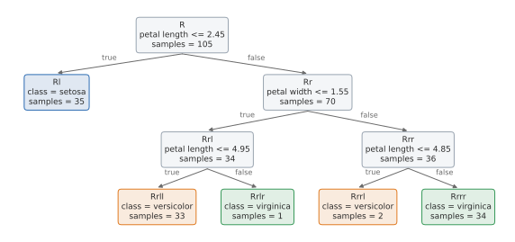
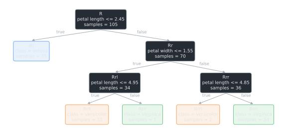
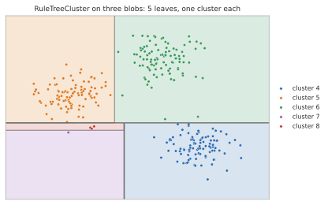
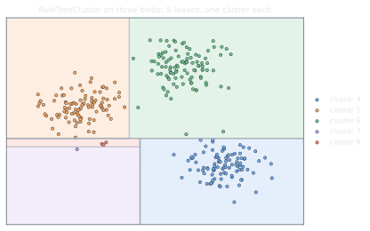

Getting started#
This guide installs RuleTree and trains a first tree for each task: classification, regression
(also with several targets) and clustering. The trees follow the scikit-learn API (fit,
predict, predict_proba, get_params, set_params) and work with the scikit-learn
tools for model selection. How the trees are built is described in How RuleTree works.
Installation#
RuleTree requires Python 3.10 or later. Some features need packages that are not installed by default: they are installed by the extras of RuleTree.
pip install RuleTree
pip install "RuleTree[shapelets]" # shapelet, proximity and partial pivot stumps (numba)
pip install "RuleTree[plot]" # drawing the trees with matplotlib (plot_tree)
pip install "RuleTree[graphviz]" # Graphviz drawings (also requires the Graphviz binaries)
pip install "RuleTree[kmedoids]" # shapelets selected with k-medoids (scikit-learn-extra)
pip install "RuleTree[all]" # all of the above
git clone https://github.com/fismimosa/RuleTree.git
cd RuleTree
pip install ".[all]"
pip install ".[test]" # running the tests
Note
Without the extras, the rest of the library works, and the features that need them raise a
MissingOptionalDependencyError with the command to run.
Classification#
RuleTreeClassifier grows the tree breadth-first until
the nodes are pure or a limit is reached (max_depth, max_leaf_nodes,
min_samples_split). Each leaf predicts the majority class of its training instances.
from sklearn.datasets import load_iris
from sklearn.model_selection import train_test_split
from RuleTree import RuleTreeClassifier
iris = load_iris()
X_train, X_test, y_train, y_test = train_test_split(iris.data, iris.target, test_size=0.3,
random_state=42, stratify=iris.target)
model = RuleTreeClassifier(max_depth=3, random_state=42)
model.fit(X_train, y_train)
print("accuracy:", round(model.score(X_test, y_test), 3))
print(model.predict(X_test[:5]))
print(model.predict_proba(X_test[:2]).round(2))
accuracy: 0.933
[2 1 2 1 2]
[[0. 0.03 0.97]
[0. 1. 0. ]]
random_state makes the tree reproducible: when two features split a node equally well, the
choice between them is not random.
The rules of the tree can be printed with the names of the features:
model.print_rules(model.get_rules(columns_names=iris.feature_names))
|--- petal length (cm) <= 2.45
| output: 0
|--- petal length (cm) > 2.45
| |--- petal width (cm) <= 1.55
| | |--- petal length (cm) <= 4.95
| | | output: 1
| | |--- petal length (cm) > 4.95
| | | output: 2
| |--- petal width (cm) > 1.55
| | |--- petal length (cm) <= 4.85
| | | output: 1
| | |--- petal length (cm) > 4.85
| | | output: 2




The same tree, with the class and the number of training instances of each leaf. The left child of a node gets the instances for which its rule is true.#
See Reading the tree for the other ways to read a tree.
Regression#
RuleTreeRegressor works in the same way; each leaf
predicts the mean of the target of its training instances.
from sklearn.datasets import load_diabetes
from sklearn.metrics import r2_score
from RuleTree import RuleTreeRegressor
X, y = load_diabetes(return_X_y=True)
regressor = RuleTreeRegressor(max_depth=3, random_state=42).fit(X, y)
print("R2 on the training set:", round(r2_score(y, regressor.predict(X)), 3))
print("leaves:", len(regressor.get_leaf_nodes()))
R2 on the training set: 0.501
leaves: 8
The prediction of the leaves is set by leaf_prediction: "mean" (the default),
"median", or a function of the target of the instances of the leaf.
Several targets#
With a target of shape (n_samples, n_targets), the regressor builds one tree for all the targets: the splits are shared, and each node predicts one value per target. This is how the multi-output trees of scikit-learn and the predictive clustering trees work: one set of rules instead of one tree per target, and splits that use what the targets have in common.
A split is chosen by the average of the squared errors of the targets, so a target with large
values counts more than one with small values. target_weights changes the weight of each
target: "balanced" divides each target by its standard deviation on the training set, so that
all the targets count the same (as the predictive clustering trees do); an array gives one weight
to each target. Here the targets are the disease progression of the diabetes data and the body
mass index of the patients (removed from the features), whose values are a thousand times
smaller:
import numpy as np
from RuleTree.evaluation import evaluate_regression
data = load_diabetes()
X_two = np.delete(data.data, 2, axis=1)
Y = np.column_stack([data.target, data.data[:, 2]]) # disease progression, body mass index
print("standard deviations:", [round(float(std), 3) for std in Y.std(axis=0)])
for target_weights in [None, "balanced"]:
two_targets = RuleTreeRegressor(max_depth=3, random_state=42, target_weights=target_weights).fit(X_two, Y)
r2 = evaluate_regression(Y, two_targets.predict(X_two), multioutput="raw_values")["r2"]
print(f"target_weights={target_weights}: R2 of the two targets {r2.round(3)}")
print("predictions of two patients:", two_targets.predict(X_two[:2]).round(3).tolist())
standard deviations: [77.006, 0.048]
target_weights=None: R2 of the two targets [0.435 0.277]
target_weights=balanced: R2 of the two targets [0.418 0.326]
predictions of two patients: [[159.871, -0.003], [87.018, -0.044]]
With "balanced", the splits give up a little on the disease progression to predict the body
mass index better. The predictions are always in the original scale of the targets.
Note
Some components work with a single target, and raise an error with several: the XGBoost and
fair stumps, the shapelet and proximity stumps, and local_interpretation. The XGBoost
boosting uses the XGBoost stumps; the other boostings (Ensembles) and
RuleTreeClusterRegressor support several targets.
Clustering#
RuleTreeCluster finds clusters described by rules, without
a target. To split a node, it projects its instances on their principal components and splits
the component that is best separated; a node is split only if the split improves the Bayesian
Information Criterion of the clustering (bic_eps makes this stricter).
from sklearn.datasets import make_blobs
from sklearn.metrics import adjusted_rand_score
from RuleTree import RuleTreeCluster
X, groups = make_blobs(n_samples=300, centers=3, cluster_std=0.5, random_state=0)
clustering = RuleTreeCluster(max_depth=3, random_state=0)
labels = clustering.fit_predict(X)
print("clusters:", sorted(set(labels.tolist())))
print("agreement with the true groups (ARI):", round(adjusted_rand_score(groups, labels), 2))
clusters: [4, 5, 6, 7, 8]
agreement with the true groups (ARI): 0.95
The labels identify the leaves, numbered in breadth-first order (the root is 0). Here the tree splits two of the three groups once more, so there are five clusters; the agreement with the groups stays high because each cluster lies within a single group.




The clusters of the tree above: each leaf is a region bounded by the rules of its path.#
RuleTreeClusterClassifier and
RuleTreeClusterRegressor build the tree in the same way,
without looking at the target, and then predict the majority class or the mean target of each
cluster.
component_split sets how the principal components are used. With "best" (the default),
a stump is fitted on each component and the best split according to clus_impurity is kept:
each split looks at one component. With "joint", one stump is fitted on all the components
together (a regression with several targets, see Several targets): the split is the one that
most decreases the squared distances of the instances from the centers of the two children, as a
k-means with two clusters whose border is a rule. Neither is better in general; the joint split
helps when the clusters are spread over several components, as four groups at the corners of a
square:
rng = np.random.default_rng(0)
corners = np.array([[0, 0], [4, 0], [0, 4], [4, 4]])
square_groups = rng.integers(0, 4, size=400)
X_square = corners[square_groups] + rng.normal(size=(400, 2))
for component_split in ["best", "joint"]:
labels = RuleTreeCluster(max_depth=4, random_state=0, component_split=component_split).fit_predict(X_square)
print(f"{component_split}: {len(set(labels.tolist()))} clusters, "
f"ARI {adjusted_rand_score(square_groups, labels):.2f}")
best: 4 clusters, ARI 0.72
joint: 4 clusters, ARI 0.90
With "joint", the base stumps must support several targets (the decision tree, pivot and
oblique stumps do; the fair stump does not).
Working with scikit-learn#
The trees are scikit-learn estimators, so they can be used in pipelines, cross-validation and hyper-parameter searches:
from sklearn.model_selection import GridSearchCV, cross_val_score
scores = cross_val_score(RuleTreeClassifier(max_depth=3, random_state=0), iris.data, iris.target, cv=5)
print("cross-validated accuracy:", round(scores.mean(), 3))
search = GridSearchCV(RuleTreeClassifier(random_state=0), {"max_depth": [1, 2, 3, 4]}, cv=5)
search.fit(iris.data, iris.target)
print("best max_depth:", search.best_params_["max_depth"])
cross-validated accuracy: 0.973
best max_depth: 3
Next steps#
How RuleTree works: how a tree is built from stumps, and the objects it is made of.
Choosing the splits: stumps: the available stumps, which one to use and how to combine them.
Tabular data, time series and images: trees on time series and images, alone or together with tabular data.
Reading the tree: rules, drawings, leaves and feature contributions.
Growing and updating trees: growing trees further and updating their statistics.
Saving and loading trees: saving trees to JSON and loading them back.
Ensembles: gradient boosting and explainable boosting with RuleTrees.
Evaluating the models: metrics of the predictions, of the clusters and of the size of the trees.
Extending the library: writing new stumps.
Examples: notebooks that train a tree end to end.